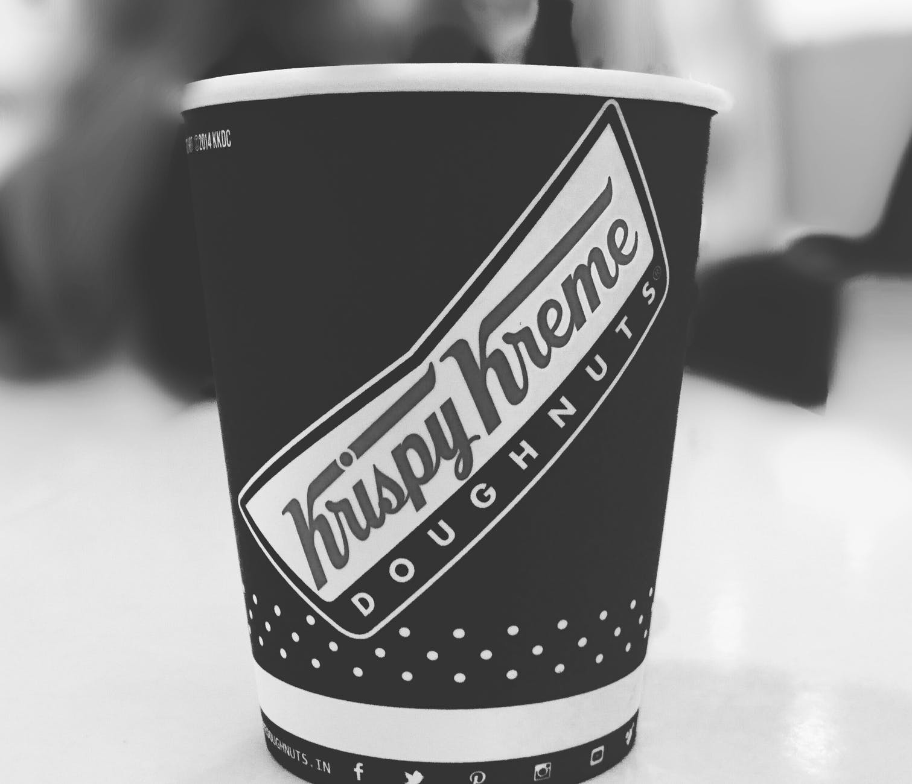
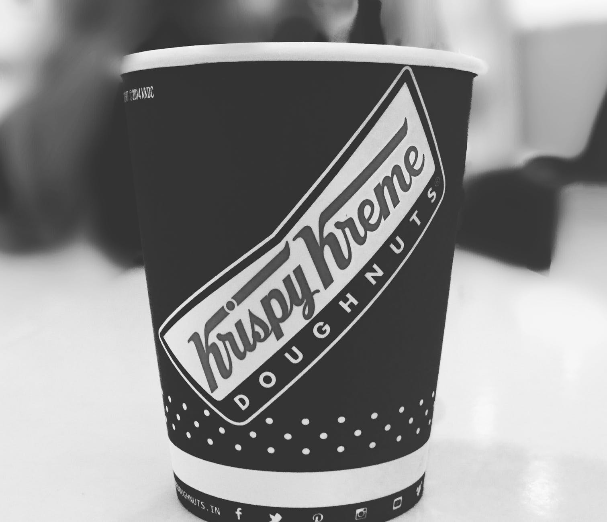
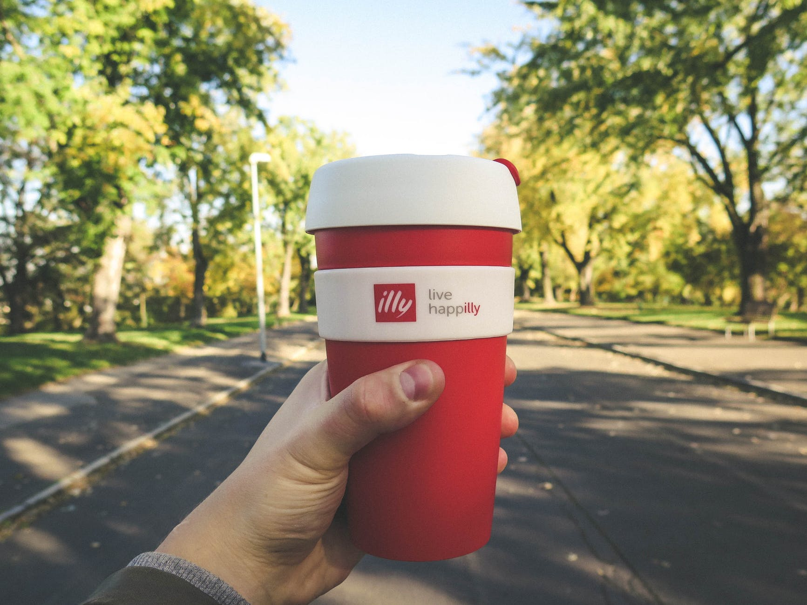
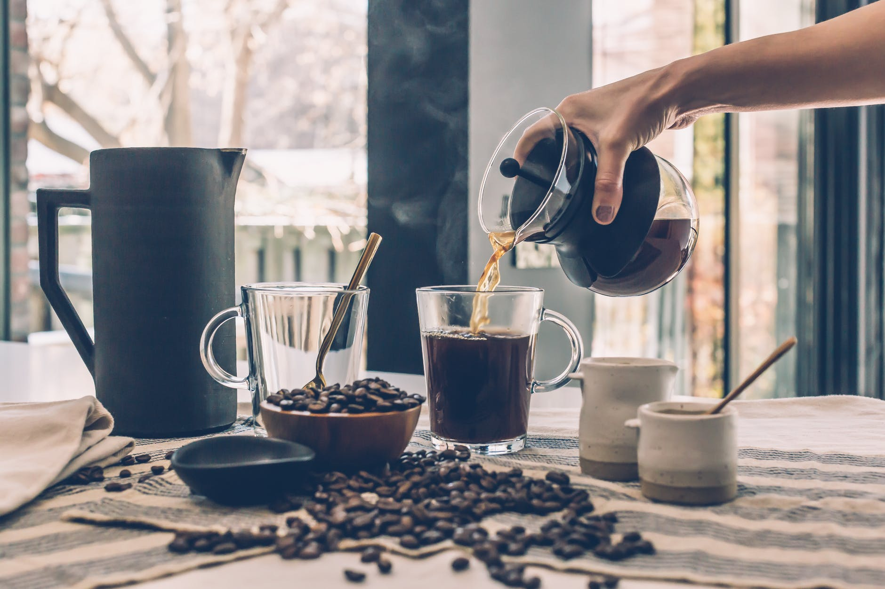
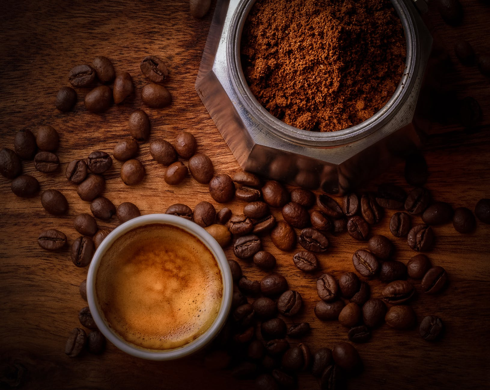

5 Steps To Do, In Order To Make The Perfect Brew
 

Mouse over to see 5 steps!
Step #1
Step #2
Step #3
Step #4
Step #5
Click To View More Images


- Click To See Fun Fact
- Hide Fun Fact
- Toggle Fun Fact
- Click To See A Quick Tip
Coffee is the second most traded commodity on earth.
To make sure your coffee maker gets hot enough, run it without any coffee in the hopper and use a thermometer to measure the temperature. If you can, try to measure the temperature during the brewing process, as the water temperature will drop as it passes through the hopper and into the carafe beneath.


